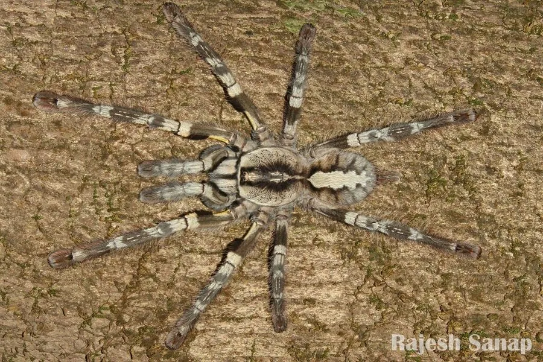

蛛形动物 · 动物界
印度华丽雨林捕鸟蛛 Poecilotheria regalis

印度东高止山区的树栖捕鸟蛛，灰白底上饰黑色花纹与黄色警戒斑，行动极快、毒液较强，善于在树皮缝隙间疾走。
- 分类
- 门节肢动物门纲蛛形纲目蜘蛛目科捕鸟蛛科属华丽雨林蛛属
- 栖息环境
- 热带落叶林的树干、树皮缝隙、树洞与枯枝间
- 地理分布
- 印度东高止山脉，主要在安得拉邦与奥里萨邦的森林
- 保护级别
- IUCN 无危（LC）；受宠物贸易与森林砍伐影响
物种志
印度华丽雨林捕鸟蛛足展约 15–18 厘米，雌性大于雄性。身体底色为灰白至银灰，背甲中央有一块深色花纹，形似对称的图腾；腹部有黑色横带与白色斑点，步足上具明显的黑白横纹，前足腹面有黄色或橙色的警戒斑。这种“花纹+警戒色”的组合使其在树皮上既有伪装又有威慑力。
它们分布于印度东高止山脉的热带干燥落叶林与湿润落叶林，是典型的树栖种类，栖息于高大树木的树皮缝隙、树洞与枯枝间，常在树干上横向疾走，速度极快。食性以飞虫、蛾类、甲虫为主，也捕食小型蜥蜴与树蛙。雌蛛在树洞中产卵，护卵期具攻击性。它的毒液在捕鸟蛛中相对较强，被咬后可能出现剧烈疼痛、肌肉痉挛与肿胀，但一般不危及健康成人。由于森林砍伐与宠物贸易，野生种群受到压力。
形态与习性
- 足展约 15–18 cm，雌性大于雄性
- 食性飞虫、蛾类、甲虫，偶捕小型蜥蜴与树蛙
- 毒性毒液较强，被咬可致剧痛、肌肉痉挛与肿胀
- 生活方式树栖，栖于树皮缝隙与树洞，善于横向疾走
- 花纹灰白底配黑色图腾纹，前足腹面有黄色警戒斑
- 防御姿态受威胁时抬起前足，露出黄色斑块示警
- 寿命雌蛛约 12 年，雄蛛约 3 年
趣味知识
- 它跑起来几乎是在树皮上横着飞，速度在捕鸟蛛里数一数二。
- 受威胁时它抬起前腿，露出腹面的黄色斑块警告对方。
- 它背甲上的黑色花纹左右对称，像一枚印在身上的图腾。